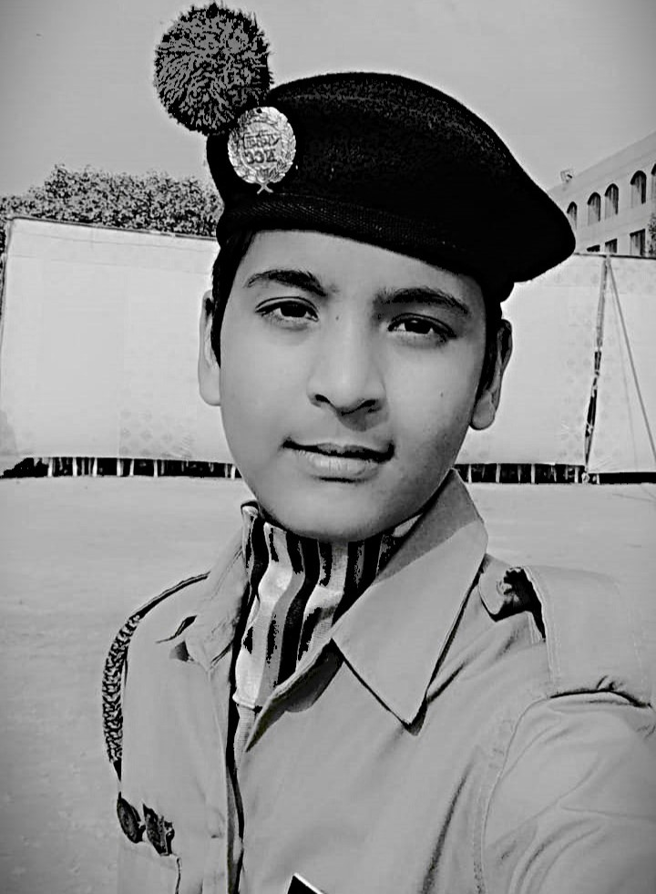
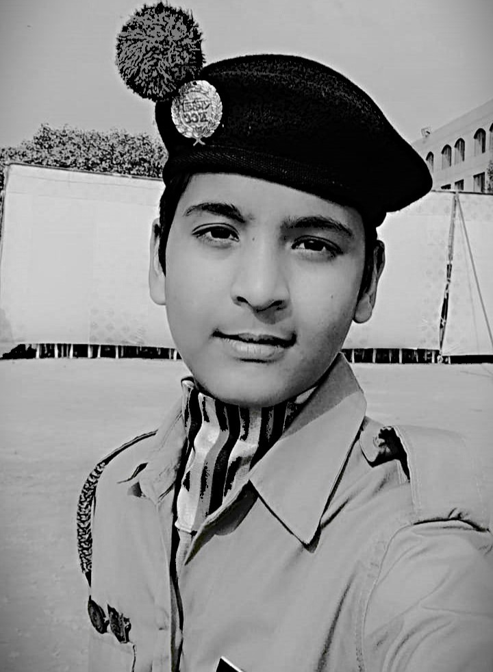

your design wizard,
and I’m all out of clever
ways to say "Hi!"
 

My background is in design & development, but I love everything related to product. I’m a double threat in product and design, meaning I can play on both positions.
I currently work as freelancer. I lead the function of
Experience Design and help teams craft high-quality experiences for the products and companies for launch.
I wear many different hats. But mainly I focus on Design, and the intersections of Design to
Product and Engineering.
In the last 1.5 years, I’ve launched a startups as a founding designer. I took ideas on a post-it
and created
market-ready products and companies. I did that in talented multi-disciplinary founding teams at Maneesha
Ruia.
Before that I’ve worked at agencies like Maneesha Ruia, Agency Masala, PAGC Foundation and learned
that design
is
simply thinking through a problem and finding an elegant solution. And that being a good designer is more a way
of thinking than a way of making things beautiful or being obsessed with a particular design tool.
I was born and brought up in New Delhi, India. You can find me on X my username
is @Harsh_kumar_raw. I’m also on Linkedin and Github.